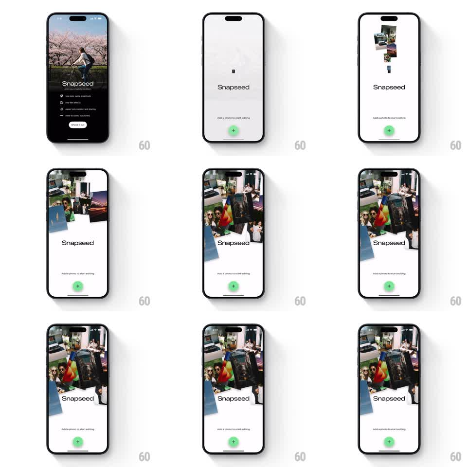

Media
Frame-by-frame

Rebuild this animation 1:1: Snapseed's pop shuffle - scattered photo cards drop from above in a staggered cascade and land in a tilted stack on the empty state screen.

Rebuild this animation 1:1: Snapseed's pop shuffle - scattered photo cards drop from above in a staggered cascade and land in a tilted stack on the empty state screen. ## Integration Integration: stack-agnostic spec - springs given as stiffness/damping, timed motions as duration + curve; map every value to your framework and animation library of choice. ## Scene Light gray empty-state screen: "Snapseed" wordmark center, "Add a photo to start editing" caption, green + button. The action: a handful of photo prints (5-7) fall from above the top edge and gather into a tilted, overlapping stack above the wordmark. ## Motion spec Pattern: staggered cascade of photos dropping into a stack. - Each print starts above the screen at a random x and slight rotation, then drops with gravity (accelerating fall, ~450ms) into the stack zone. - On landing each print bounces once (spring ~220/14, vertical overshoot ~8%) and settles at its own tilt (random between -12deg and +12deg) with a soft shadow fading in beneath. - Prints land 90ms apart, alternating sides, each new print landing on top (z-order increases). - After the last print lands, the whole stack does a tiny collective settle (scale 1.02 -> 1, 200ms) and idles with a faint sway (+-1deg, 4s). - The wordmark and + button never move. ## Calibration - The stack must look casually tossed, not aligned: every tilt different, slight overlaps, no grid. - Falls are snappy: under half a second each, total cascade under 1.2s. ## Reduced motion Stack fades in fully formed (300ms). ## Don't miss - Prints are photos (real image content), not placeholders. - The cascade plays on entry to the empty state - it is a welcome, not a loop.